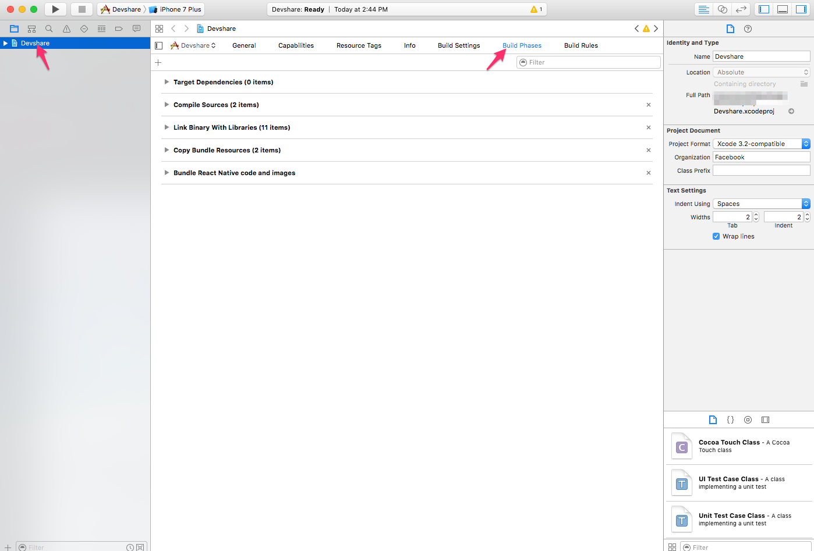

React Native
Connecting to Firebase through react-native can be done with the default Firebase javascript library, or through native modules. Libraries such as react-native-firebase that preserve Firebase's web library syntax while providing access to native modules can be used with react-redux-firebase.
Regardless of which path you want to take, initial setup is the same, so we will begin there. Below are separate sections for the two different setups (native or web).
NOTE: Make sure you include enableRedirectHandling: false when using react-native with v2.0.0. This is required to disable redirect handling (which uses http) since it is not supported in react-native. There has been discussion of a way to make this happen automatically, but for now it is required.
JS/Web
Setup and use react-redux-firebase as normal (described in the use section of the README). Since Firebase is initialized outside of react-redux-firebase, the automatic handling of react-native done by Firebase works.
react-native complete example app
NOTES
- The web SDK is actually used directly, so this method is as close as it comes to web dev
- Slighly less performant than using native modules since the render thread is used for all JS
- Only works for versions
v2.0.0and higher. For older versions please view the docs associated with previous version.
Native Modules
Passing in an instance also allows for libraries with similar APIs (such as react-native-firebase) to be used instead:
- Follow use instructions in README
When creating redux store pass
react-native-firebaseApp instance intoReactReduxFirebaseProviderlike so:import React from 'react' import { render } from 'react-dom' import { Provider } from 'react-redux' import RNFirebase from 'react-native-firebase'; import { createStore, combineReducers, compose } from 'redux' import { ReactReduxFirebaseProvider, firebaseReducer } from 'react-redux-firebase' // import { createFirestoreInstance, firestoreReducer } from 'redux-firestore' // <- needed if using firestore const fbConfig = {} // react-redux-firebase config const rrfConfig = { userProfile: 'users' // useFirestoreForProfile: true // Firestore for Profile instead of Realtime DB } // Initialize firebase instance firebase.initializeApp(fbConfig) // Initialize other services on firebase instance // firebase.firestore() // <- needed if using firestore // firebase.functions() // <- needed if using httpsCallable // Add firebase to reducers const rootReducer = combineReducers({ firebase: firebaseReducer // firestore: firestoreReducer // <- needed if using firestore }) // Create store with reducers and initial state const initialState = {} const store = createStore(rootReducer, initialState) const rrfProps = { firebase: RNFirebase, config: rrfConfig, dispatch: store.dispatch, // createFirestoreInstance // <- needed if using firestore } // Setup react-redux so that connect HOC can be used function App() { return ( <Provider store={store}> <ReactReduxFirebaseProvider {...rrfProps}> <Todos /> </ReactReduxFirebaseProvider> </Provider> ); }
Full react-native-firebase example app source with styling available in the react-native-firebase complete example.
Creating Your Own
We are going to use the project name Devshare for example here. For your project, use your project name everywhere where Devshare is used.
Start
- Make sure you have
create-react-native-appinstalled, or install it usingnpm install -g create-react-native-app. - Run
create-react-native-app Devshare(again replace Devshare with the name of your project) - After that is complete, eject using
yarn ejectornpm run eject
Setup
- Click "Add Firebase To iOS"
- Download
GoogleService-info.plist - Place
GoogleService-info.plistin the folder of whichever platform you are using (i.e./ios) - Copy your client id out of the
GoogleService-info.plistfile (should end in.apps.googleusercontent.com) - Place the client id into
iosClientIdvariable within the example
Download Firebase Config
Visit Overview page and click Add Firebase to iOS
Fill in application info in register modal and click register
Download the .plist file and place it in your
iosfolder
Add react-native-google-signin
Add
react-native-google-signinto the project- Run
npm i --save react-native-google-signinto include it within JS dependencies - Download the
react-native-google-signinzip, and unzip it - Drag and drop the
ios/GoogleSdkfolder to your xcode project. (Make sureCopy items if neededIS ticked) Add RNGoogleSignin to project build phase
Click Name in sidebar of Xcode

In your project build phase ->
Link binary with librariesstep, add:libRNGoogleSignin.aAddressBook.frameworkSafariServices.frameworkSystemConfiguration.frameworklibz.tbd
Note: (May take clicking "Add Other" button then selecting the
GoogleSdkfolder andRNGoogleSigninfolder)
- Run
Make sure all dependencies are correctly linked to your project:

Configure URL types in the
Infopanel of your xcode project- add a URL with scheme set to your
REVERSED_CLIENT_ID(found inside the plist) - add a URL with scheme set to your
bundle id
- add a URL with scheme set to your
Make sure you import
RNGoogleSignin.hin yourAppDelegate.mlike so:// add this line before @implementation AppDelegate #import <RNGoogleSignin/RNGoogleSignin.h> // add this method before @end - (BOOL)application:(UIApplication *)application openURL:(NSURL *)url sourceApplication:(NSString *)sourceApplication annotation:(id)annotation { return [RNGoogleSignin application:application openURL:url sourceApplication:sourceApplication annotation:annotation]; }
At the end of this step, your Xcode config should look similar to this:

Set Open URLs
Only one openURL method can be defined, so if you have multiple listeners which should be defined (for instance if you have both Google and Facebook OAuth), you must combine them into a single function like so:
AppDelegate.m:
- (BOOL)application:(UIApplication *)application openURL:(NSURL *)url
sourceApplication:(NSString *)sourceApplication annotation:(id)annotation {
return [[FBSDKApplicationDelegate sharedInstance] application:application
openURL:url
sourceApplication:sourceApplication
annotation:annotation
]
|| [RNGoogleSignin application:application
openURL:url
sourceApplication:sourceApplication
annotation:annotation
];
}
Run It
Now, if everything was done correctly you should be able to do the following:
react-native run-ios